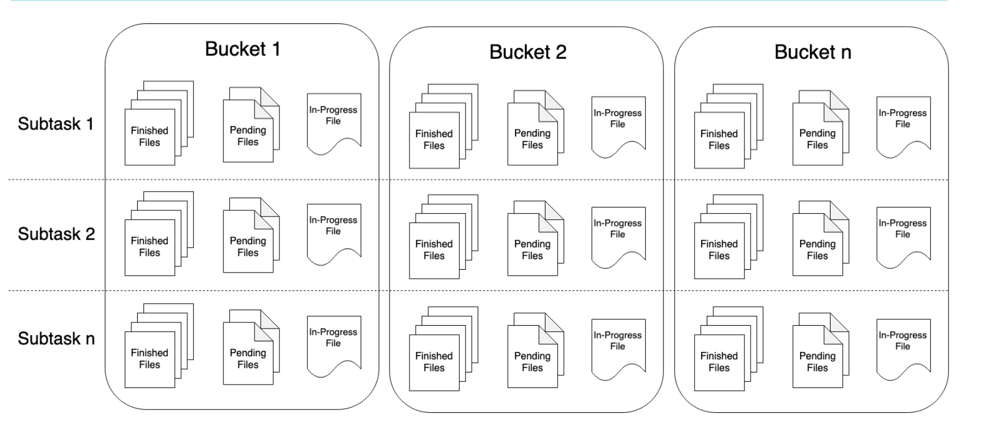

2.3 Data Sinks
由于transform操作比较多，所以放在下一节将，这节讲一下Data Sink。Sink就是把结果保存到一个地方或者直接打印出来。Flink有很多内置的sink，例如writeAsText，writeAsCsv, print等等，当然还有自定义的sink方法以及第三方sink。
2.3.1 内置sink
先看一个例子：
package com.littlely.udfsink
import org.apache.flink.core.fs.FileSystem.WriteMode
import org.apache.flink.streaming.api.scala._
import org.apache.flink.streaming.api.scala.StreamExecutionEnvironment
import org.apache.flink.streaming.api.windowing.time.Time
object UDFSink {
def main(args: Array[String]): Unit = {
val env = StreamExecutionEnvironment.getExecutionEnvironment
env.setParallelism(1)
val text = env.socketTextStream("localhost", 9999)
val res = text.flatMap(_.toLowerCase.split(" ")).filter(_.nonEmpty)
.map((_, 1))
.keyBy(0)
.timeWindow(Time.seconds(5))
.sum(1)
.map(r => {r._1 +","+ String.valueOf(r._2)})
res.writeAsText("file:///my-flink-learning/src/main/resources/udf_sink.txt",
WriteMode.OVERWRITE)
env.execute("WriteToText")
}
}
开启socket，输入一些单词，经过程序处理后就会保存到你设定的文件中。
2.3.2 自定义sink
现在主要说一下自定义sink，先看一下代码：
package com.littlely.udfsink
import org.apache.flink.configuration.Configuration
import org.apache.flink.streaming.api.functions.sink.{RichSinkFunction, SinkFunction}
import org.apache.flink.streaming.api.scala._
import org.apache.flink.streaming.api.scala.StreamExecutionEnvironment
import org.apache.flink.streaming.api.windowing.time.Time
object UDFSink {
def main(args: Array[String]): Unit = {
val env = StreamExecutionEnvironment.getExecutionEnvironment
env.setParallelism(1)
val text = env.socketTextStream("localhost", 9999)
val res = text.flatMap(_.toLowerCase.split(" ")).filter(_.nonEmpty)
.map((_, 1))
.keyBy(0)
.timeWindow(Time.seconds(5))
.sum(1)
res.addSink(new MyRichSink)
env.execute("MyRichSink")
}
}
class MySink extends SinkFunction[(String, Int)]{
override def invoke(value: (String, Int), context: SinkFunction.Context[_]): Unit = {
val v = value._1 + "," + String.valueOf(value._2)
println(v)
}
}
class MyRichSink extends RichSinkFunction[(String, Int)]{
override def invoke(value: (String, Int), context: SinkFunction.Context[_]): Unit = {
val v = value._1 + "," + String.valueOf(value._2)
println(v)
}
override def open(parameters: Configuration): Unit = {
println("open...")
}
override def close(): Unit = {
println("close...")
}
}
自定义sink可以实现SinkFunction接口，也可以实现RichSinkFunction抽象类，用的比较多的是RichSinkFunction，因为RichSinkFunction有open和close方法，可以很方便进行一些额外的处理，其中invoke主要就是处理数据的逻辑。
2.3.3 StreamingFileSink
不过，上面内置的sink例如writeAsText，writeAsCsv已经过时了，官方建议使用StreamingFileSink，我们再看一下StreamingFileSink是什么东西。
官网上说StreamingFileSink是把文件按照分桶的形式写入文件系统，它和checkpoint机制的集成能够提供exactly once的语义。那么它是怎么分桶的？你首先提供一个基路径，基路径内包含了每一个分桶的路径，每个分桶内包含一部分你要插入的文件数据。但是你要怎么控制分桶呢，它是通过实现BuketAssigner接口来实现的，你可以通过使用时间或者元素的某一个属性来定义分桶路径，当然它也有一个默认的实现BuketAssigner的类就是DateTimeBucketAssigner，也就是说，你如果不实现BuketAssigner这个接口，程序默认使用DateTimeBucketAssigner来每小时创建一个新的桶。StreamingFileSink支持按行(row-wise)和分块(bulk)编码的方式，分别对应两个builder模式的方法，下面分别讲解两个方法的代码。
行编码格式
package com.littlely.udfsink
import java.io.IOException
import org.apache.flink.api.scala._
import org.apache.flink.api.common.serialization.SimpleStringEncoder
import org.apache.flink.core.fs.Path
import org.apache.flink.core.io.SimpleVersionedSerializer
import org.apache.flink.streaming.api.functions.sink.filesystem.{BucketAssigner, StreamingFileSink}
import org.apache.flink.streaming.api.scala.StreamExecutionEnvironment
import org.apache.flink.streaming.api.windowing.time.Time
import scala.util.Random
object MyForRowFormatSink {
def main(args: Array[String]): Unit = {
val env = StreamExecutionEnvironment.getExecutionEnvironment
env.setParallelism(1)
env.enableCheckpointing(1000)
val outputPath = "/Users/littlely/projects/outputs"
val text = env.socketTextStream("localhost", 9999)
val res = text.flatMap(_.toLowerCase.split(" ")).filter(_.nonEmpty)
.map((_, 1))
.keyBy(0)
.timeWindow(Time.seconds(5))
.sum(1)
.map(p => p._1 + "," + p._2.toString)
val mySink = StreamingFileSink.forRowFormat(new Path(outputPath), new SimpleStringEncoder[String]("utf-8"))
.withBucketAssigner(new MyAssigner)
.build()
// 默认1min出数据：bucketCheckInterval (default = 1 min) : Millisecond interval for checking time based rolling policies
res.addSink(mySink)
env.execute("StreamingFileSink")
}
}
class MyAssigner extends BucketAssigner[String, String]{
val random = new Random(123)
val list = List("aaaaa", "bbbbb")
override def getBucketId(element: String, context: BucketAssigner.Context): String = {
val selected = list(random.nextInt(2))
selected
}
override def getSerializer: SimpleVersionedSerializer[String] = {
new MySerializer
}
}
class MySerializer extends SimpleVersionedSerializer[String]{
private final val _version: Int = 123
override def getVersion: Int = _version
override def serialize(obj: String): Array[Byte] = {
obj.getBytes("utf-8")
}
override def deserialize(version: Int, serialized: Array[Byte]): String = {
if (version != _version) throw new IOException("The version is not match!")
serialized.toString
}
}
和前面一样，先从socket读取数据，中间一些变换的操作，然后把结果sink到外部文件，这里使用的sink就是StreamingFileSink，其中forRowFormat有两个参数，一个是提供基路径，另一个参数是提供Encoder，既控制元素写入文件。控制分桶时就要实现BucketWriter[IN, BucketID]，其中IN就是元素的类型，BucketID就是分桶名称的类型，也就是方法getBucketId返回对象的类型，返回的对象必须有正确的hashCode和equals方法，因为它们关系到发送数据的路径是否正确。
实现BucketWriter的两个方法，一个是getBucketId，就是要获取输入元素所要分哪个桶的方法，上面实现的方法是在aaaaa和bbbbb中随机选一个，并把元素放到该路径下的文件中；另一个方法是getSerializer，作用就是要序列化或反序列化getBucketId所返回的对象，说白了就是对BucketID进行序列化和反序列化，该方法返回的是SimpleVersionedSerializer类型的对象，需要确定好其中的版本信息。
块编码方式
package com.littlely.udfsink
import java.nio.charset.{Charset, StandardCharsets}
import org.apache.flink.api.common.serialization.BulkWriter
import org.apache.flink.api.scala._
import org.apache.flink.core.fs.{FSDataOutputStream, Path}
import org.apache.flink.streaming.api.functions.sink.filesystem.StreamingFileSink
import org.apache.flink.streaming.api.scala.StreamExecutionEnvironment
import org.apache.flink.streaming.api.windowing.time.Time
import org.apache.flink.util.Preconditions
object MyForBulkFormatSink {
def main(args: Array[String]): Unit = {
val env = StreamExecutionEnvironment.getExecutionEnvironment
env.setParallelism(1)
env.enableCheckpointing(1000)
val outputPath = "/Users/littlely/projects/outputs"
val text = env.socketTextStream("localhost", 9999)
val res = text.flatMap(_.toLowerCase.split(" ")).filter(_.nonEmpty)
.map((_, 1))
.keyBy(0)
.timeWindow(Time.seconds(5))
.sum(1)
.map(p => p._1 + "," + p._2.toString)
val sink = StreamingFileSink.forBulkFormat(new Path(outputPath), new MyBulkWriter)
.withBucketAssigner(new MyAssigner)
.build()
res.addSink(sink)
env.execute("MyForBulkFormatSink")
}
}
class MyBulkFactory extends BulkWriter[String]{
var stream: FSDataOutputStream = _
val charset: Charset = StandardCharsets.UTF_8
def this(inputStream: FSDataOutputStream){
this()
stream = Preconditions.checkNotNull(inputStream)
}
override def addElement(element: String): Unit = {
this.stream.write(element.getBytes(charset))
this.stream.write('\n')
}
override def flush(): Unit = {
this.stream.flush()
}
/**
* This method MUST NOT close the stream that the writer writes to.
* Closing the stream is expected to happen through the invoker of this method afterwards.
*/
override def finish(): Unit = {
this.flush()
// this.stream.close() // WRONG
}
}
class MyBulkWriter extends BulkWriter.Factory[String]{
override def create(out: FSDataOutputStream): BulkWriter[String] = {
val bulkWriter = new MyBulkFactory(out)
bulkWriter
}
}
forBulkFormat的输入也有两个参数，第一个参数仍然是基路径，第二个参数是一个BulkWriter.Factory类型的工厂方法。这里实现BulkWriter的三个方法，其中addElement是对元素进行写入文件，flush就是刷新中间的缓存数据到文件系统，finish是结束数据的写入，但是在这里不要关闭流，否则会出错。最后实现BulkWriter.Factory<T>的create方法创建一个BulkWriter来对流进行写入，其中T是写入数据的类型。
StreamingFileSink时需要设置checkpoint，否则文件一直会处于in-progress或pending状态。
另外再说一说保存文件时的三个状态，其分别是in-progress，pending和finish。in-progress就是正在往文件中写入数据；pending就是关闭文件写入，等待文件提交；在checkpoint完成后，就会提交刚才关闭的文件，进而达到finish状态，到达finish状态的文件才是真正可安全读写的文件。每个写入的subtask在分桶文件的任一个时间点都只有一个in-progress文件，但可以有多个pending和finish文件，具体可以看官网例子Part file example。
